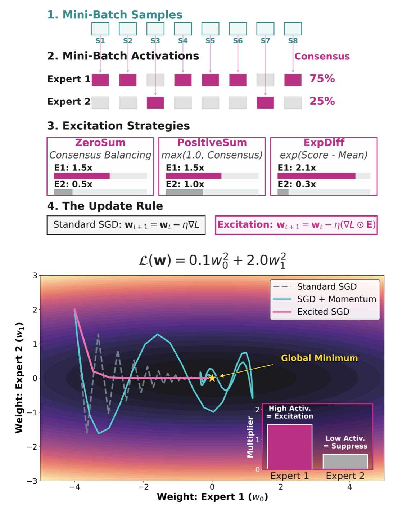

arXiv 2026
Excitation: Momentum For Experts
We propose EXCITATION, an optimizer-, domain-, and model-agnostic framework that dynamically modulates updates in sparse architectures using batch-level expert utilization. By amplifying highly-utilized experts and selectively suppressing low-utilization ones, EXCITATION sharpens routing specialization, rescues deep MoEs from structural confusion, and improves convergence speed and final performance across language and vision tasks.
Read paper